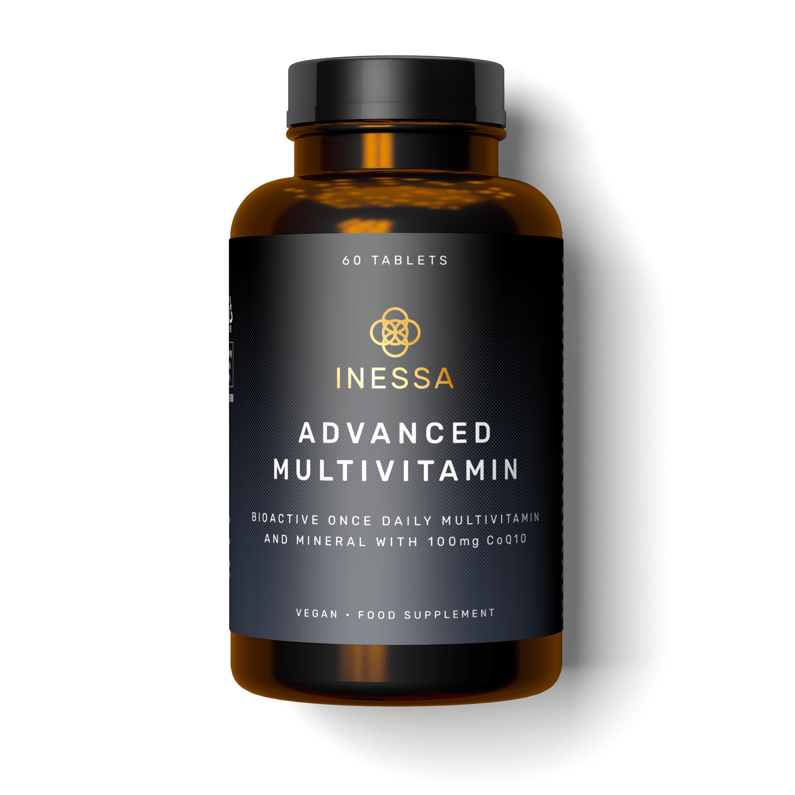

Multivitamínico son suplementos que contienen una combinación de vitaminas y minerales y, a veces, otros ingredientes. Se los conoce por diferentes nombres, como vitaminas múltiples, polivitamínicos o simplemente vitaminas.
Whey Protein es uno de los suplementos más utilizados cuando el objetivo es aumentar masa muscular o hipertrofiar. ¿La razón? Son una excelente fuente de aminoácidos esenciales (contiene 9) y elevan los aminoácidos plasmáticos.
Mass Gainer es un suplemento deportivo, que generalmente se toma en forma de batido, cuya finalidad es ganar peso. Este suplemento se compone en su gran mayoría de carbohidratos, pero también contienen proteínas, grasas, glutamina e incluso algunos tienen creatina.
Pre-Workout son complejos nutricionales o sustancias alimenticias que se toman antes de la práctica deportiva y tienen por finalidad mejorar la capacidad del deportista antes de someterse a las rutinas de entrenamientos, para permitirle alcanzar niveles más altos de rendimiento.